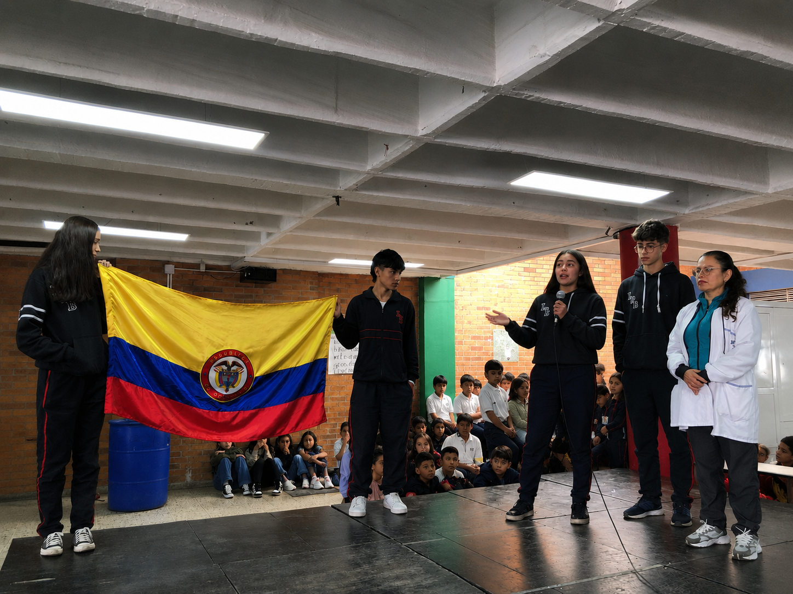
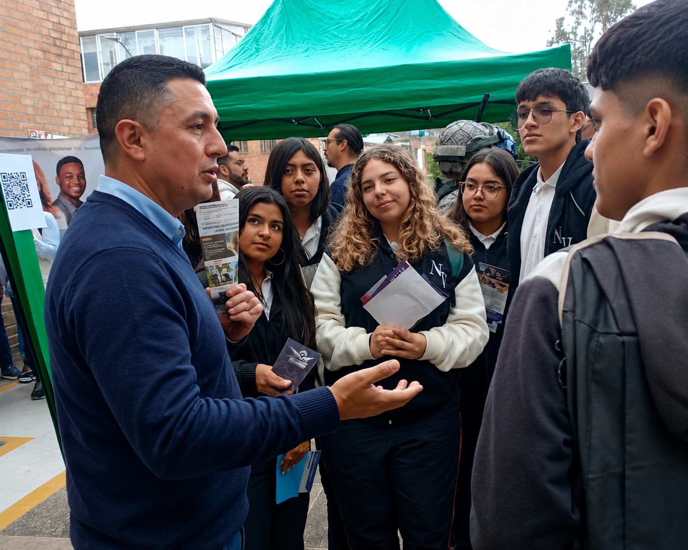

Fortalecimiento académico
Consolidamos competencias y conocimientos fundamentales para enfrentar con seguridad los retos de la etapa final escolar.
En Educación Media acompañamos a nuestros estudiantes en la consolidación de sus conocimientos, su autonomía y las habilidades necesarias para tomar decisiones conscientes sobre su futuro académico, profesional y personal.
Los grados 10° y 11° representan una etapa decisiva en la formación de nuestros estudiantes. En el LPB fortalecemos su capacidad para analizar, argumentar, investigar, resolver problemas y asumir nuevas responsabilidades.
Nuestro propósito es que cada estudiante llegue al final de su vida escolar con herramientas académicas, personales y sociales que le permitan avanzar con confianza hacia sus próximos retos.

La Educación Media integra el fortalecimiento académico con espacios de orientación, investigación, innovación y desarrollo personal.
Consolidamos competencias y conocimientos fundamentales para enfrentar con seguridad los retos de la etapa final escolar.
Promovemos el análisis, la argumentación, la interpretación y la construcción de criterios propios.
Fortalecemos las habilidades comunicativas en una segunda lengua como herramienta para el estudio y nuevas oportunidades.
Integramos herramientas digitales y experiencias de innovación para un mundo en constante cambio.
Impulsamos procesos de indagación, análisis de información y construcción de soluciones.
Fortalecemos la responsabilidad, la iniciativa y la capacidad de participar activamente en la comunidad.
Durante la Educación Media se refuerzan competencias de lectura crítica, razonamiento, ciencias, inglés y demás áreas fundamentales, promoviendo estrategias de análisis y resolución de preguntas que aportan a la preparación de los estudiantes para las Pruebas Saber 11.
La preparación académica forma parte de un proceso más amplio: aprender, evaluar avances y continuar creciendo.

Acompañamos a nuestros estudiantes en la exploración de sus intereses, capacidades y expectativas para que puedan tomar decisiones cada vez más informadas sobre su formación y sus próximos pasos.
Exploración de intereses, fortalezas y áreas de proyección.
Herramientas para evaluar posibilidades y elegir con mayor claridad.
Reflexión sobre metas, responsabilidades y objetivos a futuro.
Preparación para nuevas experiencias académicas y profesionales.
No se trata únicamente de llegar a la graduación, sino de construir progresivamente las herramientas necesarias para lo que viene después.
Conoce nuestra propuesta educativa y descubre cómo acompañamos a nuestros estudiantes durante los últimos años de su vida escolar.